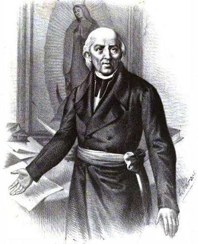
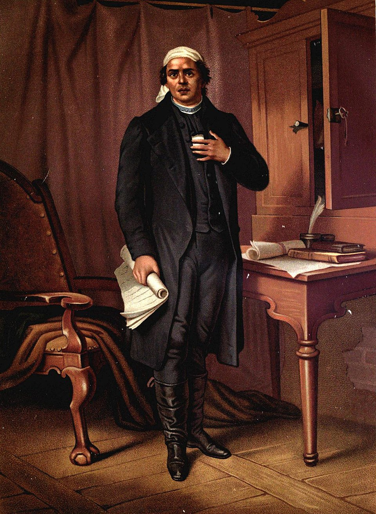
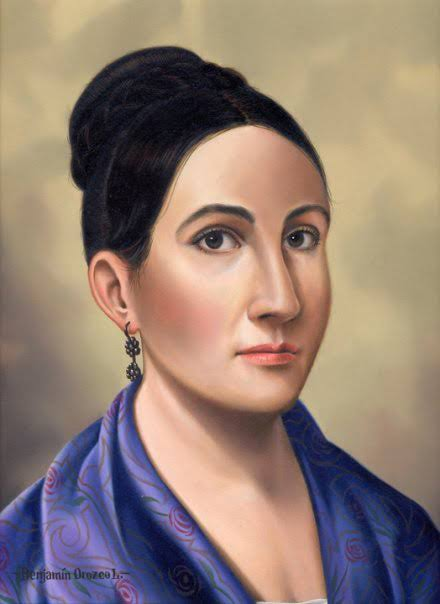

PERSONAJES ILUSTRES

Fue sacerdote y uno de los principales líderes del movimiento iniciado en 1810. Su llamado en Dolores es recordado como un símbolo del inicio de la lucha por la Independencia. Participó en las primeras etapas de la insurgencia y se convirtió en una de las figuras más importantes de la historia de México.

Fue sacerdote y líder insurgente. Organizó campañas militares y dio continuidad al movimiento independentista. En 1813 presentó los Sentimientos de la Nación, documento que expresó ideas políticas sobre el futuro de la nación.

Participó en la conspiración de Querétaro. Cuando la conspiración fue descubierta, avisó a los participantes. Es reconocida como una figura importante en los acontecimientos que precedieron al inicio de la Independencia.